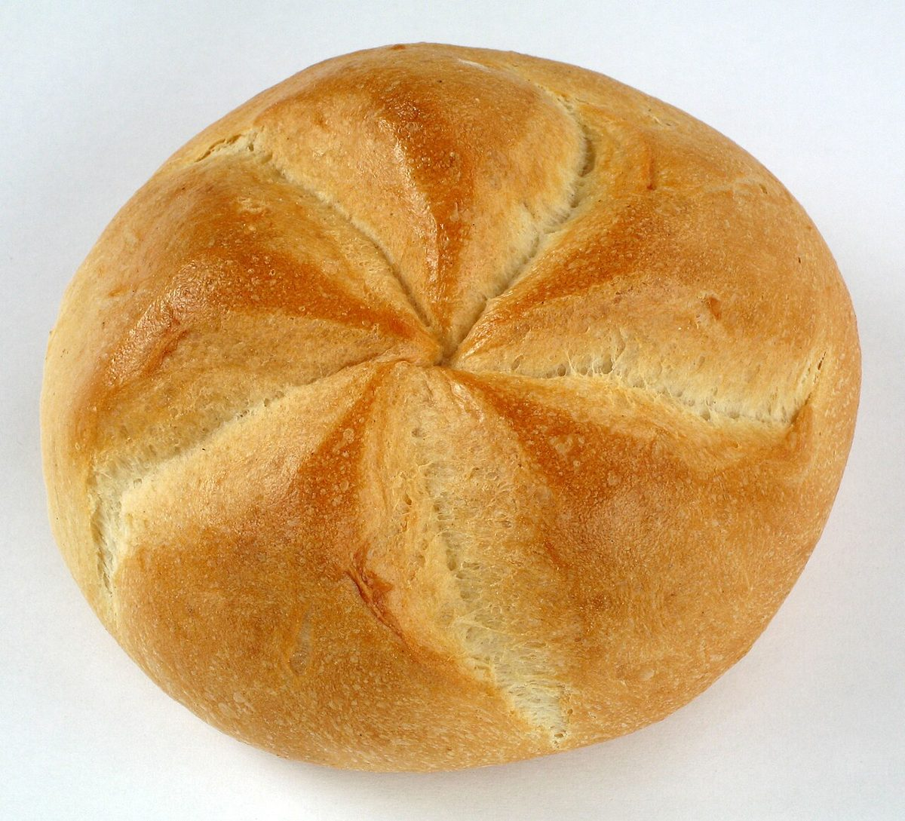
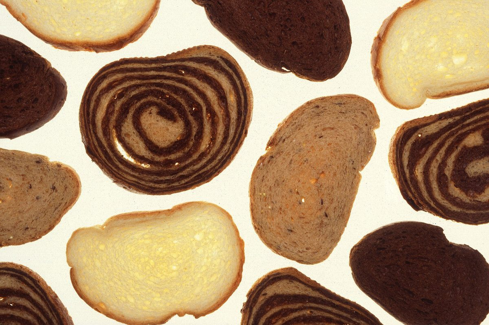

店のこと
店のこと
お店について確認できているのは、所在地とInstagramのアカウントだけです。分からないことは「準備中」と書いています。
確認できていること
- 店名は「マトカ」、業種はカフェ
- 所在地は大阪府茨木市大手町2-6(〒567-0883)
- 電話番号はなし。連絡手段はInstagram
- 営業時間・定休日・メニュー・価格・ご予約・駐車場は準備中


想像してみる(制作側の創作)
この欄は制作側が想像して書いたもので、お店の実際の内容とは関係がありません。
カフェなので、コーヒー豆やパンの写真が似合いそうだと考え、このサイトの写真はコーヒー豆の接写と、白や黒の背景のパンだけにしました。実際のお店の写真は、ご提供いただいたものに差し替えます。